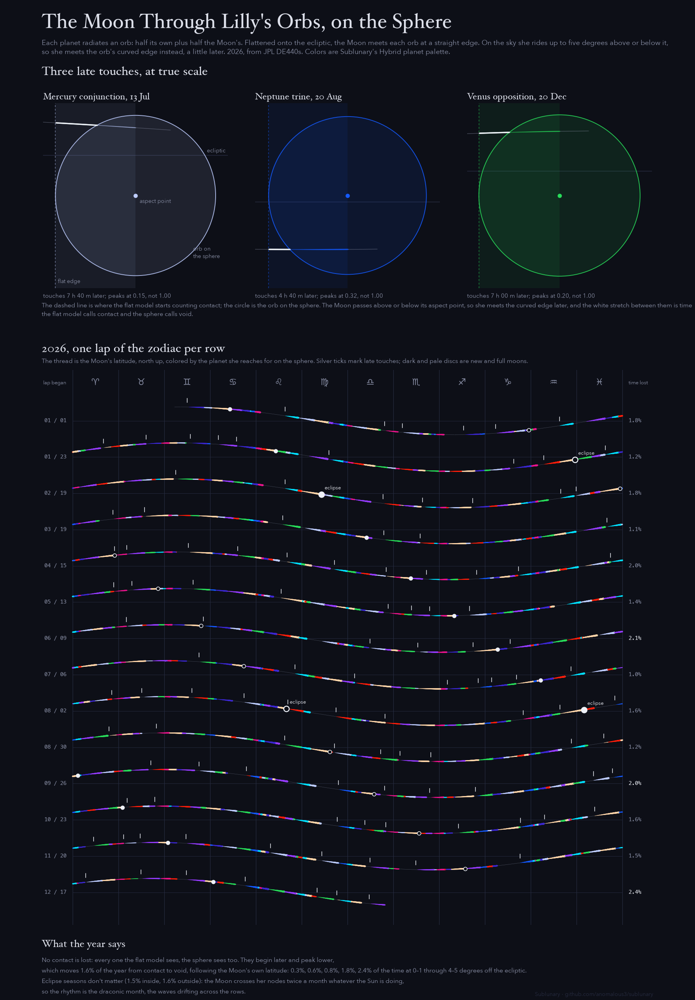

Lilly's Orbs on the Sphere
William Lilly gave every planet an orb, and the Moon is in contact when she comes within half of each. Usually that's measured flat, along the ecliptic. On the actual sky she rides up to five degrees above or below it, so she meets each orb's curved edge instead. Across 2026 no contact is lost, but every touch comes later and lower, and the loss follows the draconic month: the 27.2 days between her crossings of the same node, the waves drifting across the rows below.
